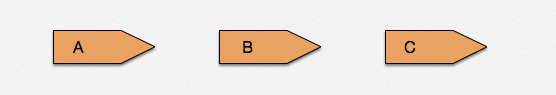

与其他 location 配合
Nginx 世界的 location 是异常强大的，毕竟 Nginx 的主要应用场景是在负载均衡、API Server，在不同 server、location 之间跳转更是家常便饭。利用不同 location 的功能组合，我们可以实现 内部调用、流水线方式跳转、外部重定向 等几种不同形式的服务，下面将给大家介绍几个主要应用，就当抛砖引玉。
内部调用
例如对数据库、内部公共函数的统一接口，可以把它们放到统一的 location 中。通常情况下，为了保护这些内部接口，都会把这些接口设置为 internal 。这么做的最主要好处就是可以让这个 内部接口相对独立，不受外界干扰。
示例代码：
location = /sum {
# 只允许内部调用
internal;
# 这里做了一个求和运算只是一个例子，可以在这里完成一些数据库、
# 缓存服务器的操作，达到基础模块和业务逻辑分离目的
content_by_lua_block {
local args = ngx.req.get_uri_args()
ngx.say(tonumber(args.a) + tonumber(args.b))
}
}
location = /app/test {
content_by_lua_block {
local res = ngx.location.capture(
"/sum", {args={a=3, b=8}}
)
ngx.say("status:", res.status, " response:", res.body)
}
}
紧接着，稍微扩充一下，并行请求的效果，示例如下：
location = /sum {
internal;
content_by_lua_block {
ngx.sleep(0.1)
local args = ngx.req.get_uri_args()
ngx.print(tonumber(args.a) + tonumber(args.b))
}
}
location = /subduction {
internal;
content_by_lua_block {
ngx.sleep(0.1)
local args = ngx.req.get_uri_args()
ngx.print(tonumber(args.a) - tonumber(args.b))
}
}
location = /app/test_parallels {
content_by_lua_block {
local start_time = ngx.now()
local res1, res2 = ngx.location.capture_multi( {
{"/sum", {args={a=3, b=8}}},
{"/subduction", {args={a=3, b=8}}}
})
ngx.say("status:", res1.status, " response:", res1.body)
ngx.say("status:", res2.status, " response:", res2.body)
ngx.say("time used:", ngx.now() - start_time)
}
}
location = /app/test_queue {
content_by_lua_block {
local start_time = ngx.now()
local res1 = ngx.location.capture_multi( {
{"/sum", {args={a=3, b=8}}}
})
local res2 = ngx.location.capture_multi( {
{"/subduction", {args={a=3, b=8}}}
})
ngx.say("status:", res1.status, " response:", res1.body)
ngx.say("status:", res2.status, " response:", res2.body)
ngx.say("time used:", ngx.now() - start_time)
}
}
测试结果：
➜ ~ curl 127.0.0.1/app/test_parallels
status:200 response:11
status:200 response:-5
time used:0.10099983215332
➜ ~ curl 127.0.0.1/app/test_queue
status:200 response:11
status:200 response:-5
time used:0.20199990272522
利用 ngx.location.capture_multi 函数，直接完成了两个子请求并行执行。当两个请求没有相互依赖时，这种方法可以极大地提高查询效率。 两个无依赖请求，各自是 100ms，顺序执行需要 200ms，但通过并行执行它们可以在 100ms 全部完成。实际生产中查询时间可能没这么规整，但思想大同小异，这个特性是很有用的。

该方法，可以被广泛应用于广告系统（1：N 模型，一个请求，后端从 N 家供应商中获取条件最优广告）、高并发前端页面展示（并行无依赖界面、降级开关等）。
流水线方式跳转
现在的网络请求，已经变得越来越拥挤。各种不同 API 、下载请求混杂在一起，这就要求不同厂商针对下载的动态调整有不同的定制策略。而这些策略在一天的不同时间段，执行规则可能还不一样。这时候我们就可以效仿工厂的流水线模式，逐层过滤、处理。
示例代码：
location ~ ^/static/([-_a-zA-Z0-9/]+).jpg {
set $image_name $1;
content_by_lua_block {
ngx.exec("/download_internal/images/"
.. ngx.var.image_name .. ".jpg");
};
}
location /download_internal {
internal;
# 这里还可以有其他统一的 download 下载设置，例如限速等
alias ../download;
}
注意，ngx.exec 方法与 ngx.redirect 是完全不同的，前者是个 纯粹的内部跳转 并且 没有引入任何额外 HTTP 信号。
这里的两个 location 更像是流水线上工人之间的协作关系。第一环节的工人完成自己的处理部分后，直接交给第二环节处理人（实际上可以有更多环节），它们之间的 数据流是定向 的。

外部重定向
不知道大家什么时候开始注意的，百度的首页已经不再是 HTTP 协议，它已经全面修改到了 HTTPS 协议上。但是对于大家的输入习惯，估计还是在地址栏里面输入 baidu.com ，回车后发现它会自动跳转到 https://www.baidu.com ，这时候就需要的外部重定向了。
location = /foo {
content_by_lua_block {
ngx.say([[I am foo]])
}
}
location = / {
rewrite_by_lua_block {
return ngx.redirect('/foo');
}
}
执行测试，结果如下：
➜ ~ curl 127.0.0.1 -i
HTTP/1.1 302 Moved Temporarily
Server: openresty/1.9.3.2rc3
Date: Sun, 22 Nov 2015 11:04:03 GMT
Content-Type: text/html
Content-Length: 169
Connection: keep-alive
Location: /foo
<html>
<head><title>302 Found</title></head>
<body bgcolor="white">
<center><h1>302 Found</h1></center>
<hr><center>openresty/1.9.3.2rc3</center>
</body>
</html>
➜ ~ curl 127.0.0.1/foo -i
HTTP/1.1 200 OK
Server: openresty/1.9.3.2rc3
Date: Sun, 22 Nov 2015 10:43:51 GMT
Content-Type: text/html
Transfer-Encoding: chunked
Connection: keep-alive
I am foo
当我们使用浏览器访问页面 http://127.0.0.1 就可以发现浏览器会自动跳转到 http://127.0.0.1/foo 。
与之前两个应用实例不同的，外部重定向是可以跨域名的。例如从 A 网站跳转到 B 网站是绝对允许的。在 CDN 场景的大量下载应用中，一般分为调度、存储两个重要环节。调度就是通过根据请求方 IP 、下载文件等信息寻找最近、最快节点，应答跳转给请求方完成下载。